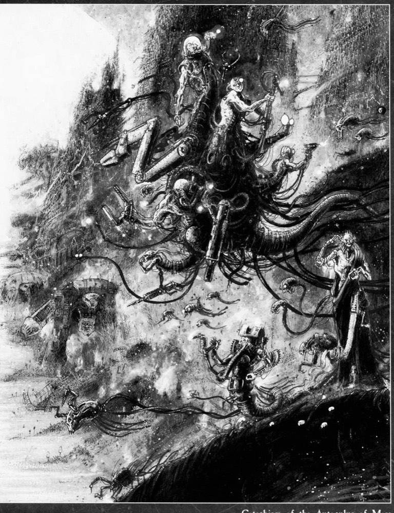

Temple of All Knowledge
| Temple of All Knowledge | |
|---|---|
| Chief temple of the Cult Mechanicus | |
 Tech-priests at worship among the machines of a Martian forge temple, from a catechism of Mars | |
| Location | Olympus Mons, Mars, Sol System |
| Type | Temple; archive; assembly hall of the priesthood |
| Religion | Cult Mechanicus (worship of the Machine God and the Omnissiah) |
| Head | Fabricator-General of Mars |
| Founded | Age of Strife (estimated); rebuilt after the Schism of Mars, late M31 (estimated) |
| Height | Roof c. 2 km above the floor, raised and lowered on pistons |
| Holds | The High Altar of Technology |
The Temple of All Knowledge is the greatest temple of the Cult Mechanicus, standing within the forge temple of Olympus Mons on Mars. It is the seat of worship of the Fabricator-General and the place where the Adeptus Mechanicus dedicates every new discovery on the High Altar of Technology. Its roof stands about two kilometres above the floor on great moving pistons, which raise and lower it to change the sound of the hymns sung to the Machine God.[1]
The temple is also the heart of the priesthood's communications. Every day it receives astropathic reports from the forge worlds of the Imperium, and it holds some of the most important archives of the Mechanicus. For pilgrims of the Cult, to see the High Altar is the purpose of a journey to Mars.[1][2]
Description
[edit]The temple's main hall is large enough to hold many thousands of adepts at once. Its walls are lined with data-stacks, reliquaries of ancient machines and the cogitators that keep the priesthood's records. The great pistons that carry the roof are themselves regarded as holy, and their maintenance is an office of high honour. The hymns sung in the hall are in binaric cant as well as in High Gothic, and the moving roof is tuned to each.[1]
At the centre stands the High Altar of Technology. Under the doctrine of the Quest for Knowledge, every discovery made by a member of the priesthood, from a recovered Standard Template Construct fragment to a newly found pattern of weapon, is to be offered there before it may be used. The custom gives the Fabricator-General control over what the priesthood may make, and it has often been the subject of dispute between Mars and the other forge worlds.[1][3]
History
[edit]Origins
[edit]Mechanicus accounts place the founding of the temple in the Age of Strife, when the priesthood of Mars gathered at Olympus Mons around its Fabricator-General. No date of foundation is kept in any open archive. By the time of the Treaty of Olympus in 739.M30 it was already the holiest place of the Mechanicum, and the Emperor is said to have been received there when the priesthood acknowledged him as the Omnissiah.[1][3][a]
Schism and restoration
[edit]During the Schism of Mars of 005–006.M31, Olympus Mons was held by the traitor Fabricator-General Kelbor-Hal, and the temple became a place of worship for the Dark Mechanicum. After the loyalists retook Mars in the Great Scouring, the temple was purged and reconsecrated under Zagreus Kane. Mechanicus records say that the cleansing of Olympus took more than a century, and that the temple was rededicated in the late 31st millennium.[4][1][b]
Later history
[edit]The temple has been the scene of the great councils of the Adeptus Mechanicus, among them those that followed the Moirae Schism of M35 and the affair of the Golden Cog in M39. In the Era Indomitus, when the Great Rift of 999.M41 cut many forge worlds off from Mars, the reports received at the temple became the chief record of which worlds had survived. Mechanicus records state that the temple still receives reports from forge worlds across the galaxy every day.[1][5]
Timeline
[edit]| Date | Event |
|---|---|
| Age of Strife (estimated) | Temple founded at Olympus Mons |
| 739.M30 | Treaty of Olympus; the Emperor received at Olympus |
| 005–014.M31 | Held by the Dark Mechanicum |
| Late M31 (estimated) | Purged and rededicated |
| M35 | Councils after the Moirae Schism |
| M39 | Affair of the Golden Cog |
| 999.M41 onward | Gathers reports from forge worlds cut off by the Great Rift |
See also
[edit]Notes
[edit]References
[edit]- ^ a b c d e f g Liber Martis: Chronicles of the Red Planet (rev. M41). Temple of All Knowledge, Mars.
- ^ Liber Ecclesiasticus (M37). Adeptus Ministorum.
- ^ a b Text and Commentary of the Treaty of Olympus (M31, annotated M38). Adeptus Mechanicus, Mars.
- ^ Chronicles of the Heresy (sealed). Logos Historica Verita, Terra.
- ^ Records of the Indomitus Crusade (ongoing). Office of the Lord Commander.